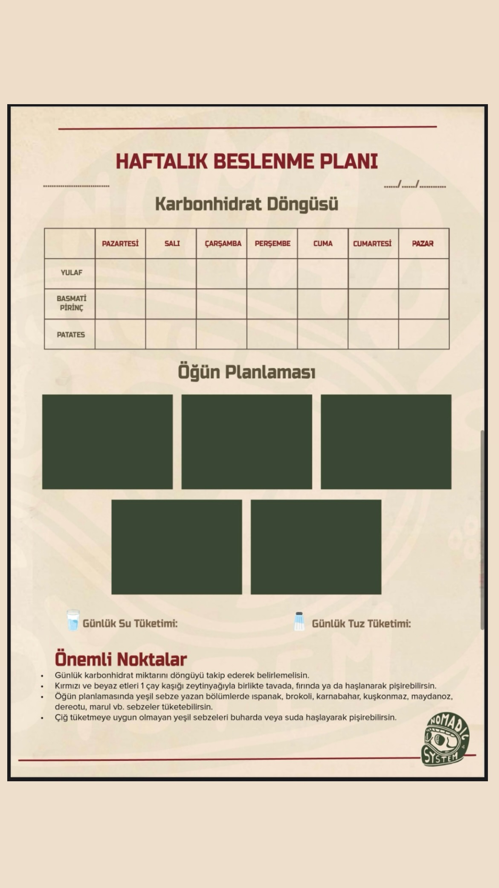
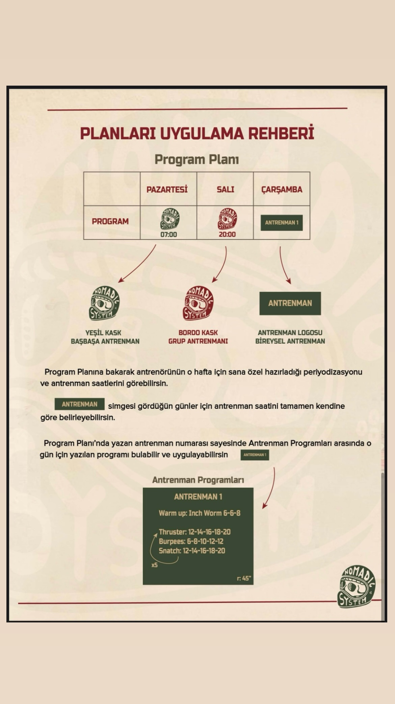
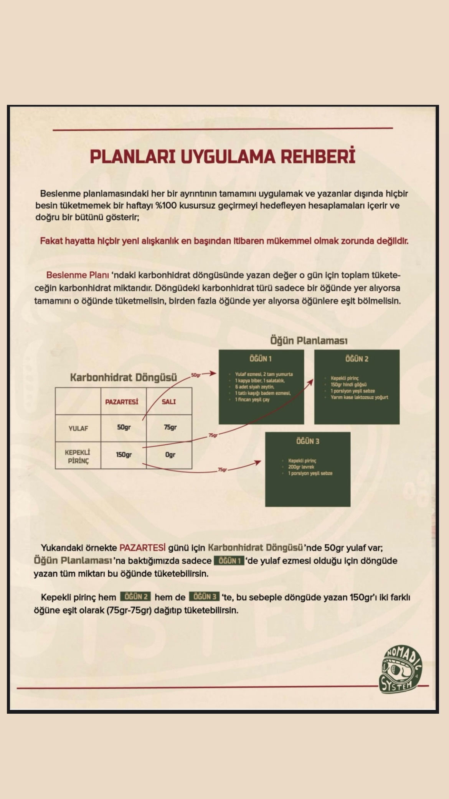

Coaching Manual
Disiplinin kağıda dökülmüş hali.
The discipline written on paper.
Haftalık Planlama Sistemi
Weekly Planning System
Hayatının ritmine ayak uyduran esnek bir yapı.
A flexible structure that keeps up with the rhythm of your life.
Nomadic System'de antrenman programları, senin için bir yük değil; sürdürülebilir bir tempo aracıdır. Hazırlanan saha notları ve program kağıtları ile günlük yoğunluk yönetimini ve kaslarının toparlanma dengesini (recovery) kusursuz bir şekilde takip edersin.
Training programs in the Nomadic System are not a burden; they are tools for a sustainable pace. You can perfectly track your daily intensity management and muscle recovery balance using the prepared field notes.
Bu esnek planlama sistemi, haftanın değişen koşullarına göre antrenman günlerini kaydırabilmeni ve disiplininden kopmadan ilerlemeni sağlar.
This flexible system allows you to shift training days according to the week's changing conditions, ensuring you progress without losing discipline.

Beslenme Planı Örneği
Nutrition Plan Example
Katı yasaklar yerine, sürdürülebilir yakıt yönetimi.
Sustainable fuel management instead of strict restrictions.
Beslenme rehberimiz, klasik fitness diyetlerinin sıkıcılığından tamamen uzaktır. Vücudunun antrenman şiddetine bağlı olarak değişen enerji ihtiyacını karşılamak için Karbonhidrat Döngüsü mantığını kullanırız.
Our nutrition guide is far from the boredom of classic fitness diets. We use the Carbohydrate Cycling logic to meet your body's changing energy needs based on workout intensity.
Ağır idman günlerinde performans ve hacmi desteklerken, dinlenme günlerinde sağlıklı yağlar ve protein ile iyileşme sürecini başlatırsın. Bu sistem, sosyal hayatından kopmadan hedefine ulaşmanı sağlayan esnek bir çerçeve sunar.
You support performance and volume on heavy training days, while initiating recovery with healthy fats and protein on rest days. This system provides a flexible framework, keeping you social.

Planları Uygulama Rehberi
Plan Implementation Guide
Haritayı nasıl okuman gerektiğini öğren.
Learn how to read the map.
Premium coaching (koçluk) kılavuzu, programının dilini çözmen için tasarlanmıştır. Program ikonları, hareketlerin tempo (tempo süresi) ve dinlenme aralıkları (rest period) gibi ince detaylar burada berraklaşır.
The premium coaching guide is designed to help you decode the language of your program. Fine details such as tempo and rest periods become clear here.
Bireysel antrenmanlarla grup seansları arasındaki renk kodlamalarını ve antrenmanın arkasında yatan biyomekanik mantığı öğrenerek, her idmana tam bir farkındalıkla girersin. Ezberlemez, neyi neden yaptığını bilirsin.
By learning the color codings and the biomechanical logic behind the workout, you enter each session with full awareness. You don't memorize; you know what you are doing and why.

